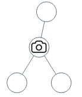
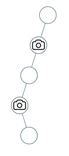

968. 监控二叉树
后序树形 DP 三状态：0=没相机但被盖住、1=有相机、2=没人管；孩子漏着就在本点放相机，根没人管最后补一台。
思路
- 后序返回三种状态：
0本点被孩子方向的相机盖住、1本点放了相机、2本点谁也没管。 - 空结点返回
0（当它已被盖住），叶子才会返回2，逼着父结点做决策。 - 孩子中有
2→ 本点必须放相机（ans++，返回1）；孩子中有1→ 本点被盖住（返回0）；孩子全是0→ 本点没人管（返回2）。 - 根没有父结点：若根返回
2，最后ans+1补一台。
图解
最优解
1class Solution {2 int ans = 0;3 4 public int minCameraCover(TreeNode root) {5 ans = 0;6 // 后序 dfs 返回：0=本点没相机但已被孩子方向盖住 1=本点放了相机 2=本点没人管7 if (dfs(root) == 2) ans++; // 根没人管：只能自己放一台8 return ans;9 }10 11 private int dfs(TreeNode node) {12 if (node == null) return 0; // 空结点当「已盖住」，逼着叶子向父结点要相机13 int l = dfs(node.left), r = dfs(node.right);14 if (l == 2 || r == 2) { ans++; return 1; } // 有孩子漏着：这里必须放相机15 if (l == 1 || r == 1) return 0; // 孩子方向有相机照着：本点被盖住16 return 2; // 孩子都自足：本点暂时没人管17 }18}题目
给定一个二叉树，我们在树的节点上安装摄像头。
节点上的每个摄影头都可以监视其父对象、自身及其直接子对象。
计算监控树的所有节点所需的最小摄像头数量。
示例 1：

输入：[0,0,null,0,0] 输出：1 解释：如图所示，一台摄像头足以监控所有节点。
示例 2：

输入：[0,0,null,0,null,0,null,null,0] 输出：2 解释：需要至少两个摄像头来监视树的所有节点。 上图显示了摄像头放置的有效位置之一。
提示：
- 给定树的节点数的范围是
[1, 1000]。 - 每个节点的值都是 0。
题面取自力扣当前版本。
数据快照 2026-11-04。题面版权归力扣所有，本站点仅供本人学习使用，请勿对外发布。